Qwen Audio Agent가 하는 일
Claude Code에 일을 맡겨 놓고 나서야 빠뜨린 요구사항이 떠오를 때가 있어요. 영상은 그럴 때 작업이 끝날 때까지 기다리지 않고 말로 끼어들 수 있는지를 시험해요. 도구는 Qwen Audio Agent이고, 백엔드에는 Claude Code를 붙여요.
Qwen Audio Agent는 음성 대화를 컴퓨터에서 일하는 에이전트에 연결해 주는 오픈소스 프로그램이에요. 아래 GitHub 저장소 화면 오른쪽 설명란에 'realtime voice runtime that keeps Agents talking, working, and present'라고 적혀 있어요.
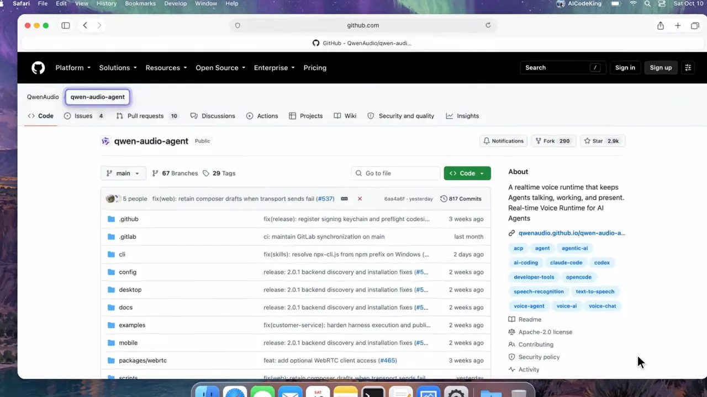
README의 핵심 기능 목록에서 화자가 두 줄을 짚어요. 하나는 '프런트엔드 대화와 백그라운드 작업이 나란히 돈다'는 줄이고, 다른 하나는 WebUI·터미널 TUI(Text User Interface)·데스크톱 음성 구슬 세 가지 화면을 제공한다는 줄이에요. 영상은 대화 기록과 작업 진행을 한 화면에서 같이 볼 수 있는 브라우저 화면(WebUI)을 써요.
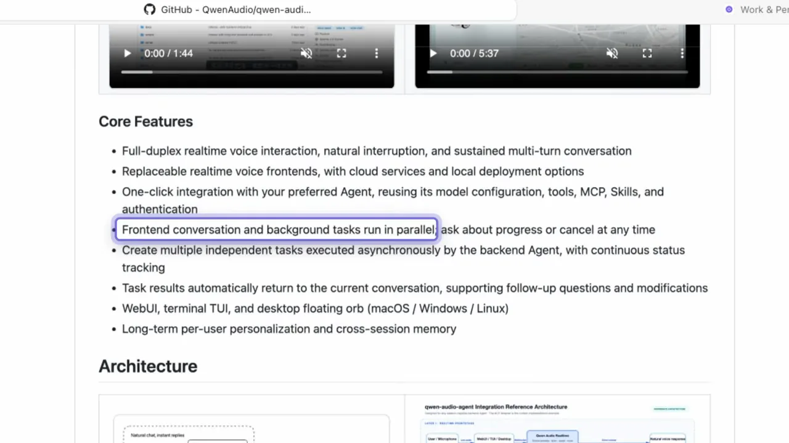
모델 연결이 두 개예요
음성 프런트엔드가 대화를 맡고, Claude Code가 코딩을 맡아요. 짧은 일반 질문은 음성 모델이 바로 답하고, 프로젝트 안에서 무언가를 만드는 일은 Claude Code로 넘어가요. 그 사이를 로컬 게이트웨이가 잇고, 작업 결과를 다시 대화로 가져와요. 아래 공식 아키텍처 그림에서 왼쪽 점선 상자가 '바로 답하는 대화', 오른쪽 아래 강조된 Agent Runtime이 '깊은 일을 넘겨받는 쪽'이에요.
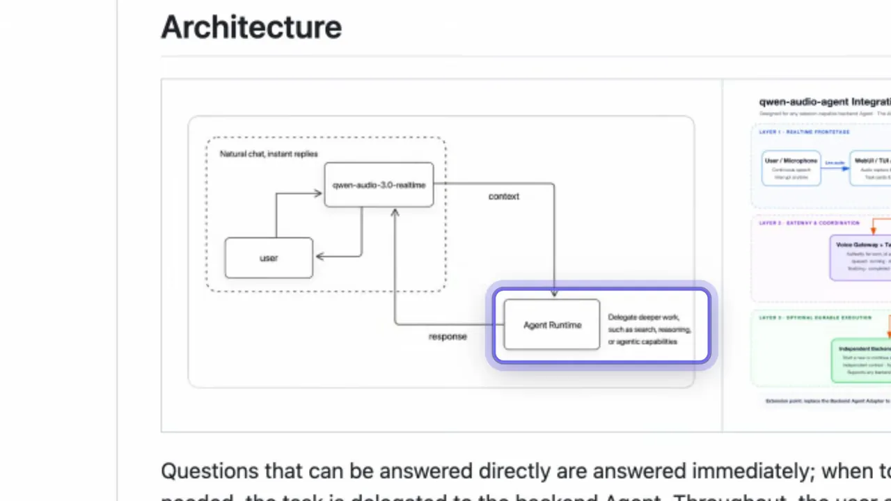
영상이 말로 설명한 구성을 이 데모에 맞춰 다시 그리면 이래요. Claude Code와의 연결에는 ACP 어댑터가 끼어 있어요.
README의 백엔드 표를 보면 Claude Code는 'External ACP adapter' 방식이에요. Claude Code가 ACP를 직접 말하지 않아서 중간에 어댑터를 하나 끼워 넣는다는 뜻이에요. 화자는 이 연동을 직접 짤 필요가 없고 설치 명령이 어댑터까지 깔아 준다고 말해요.
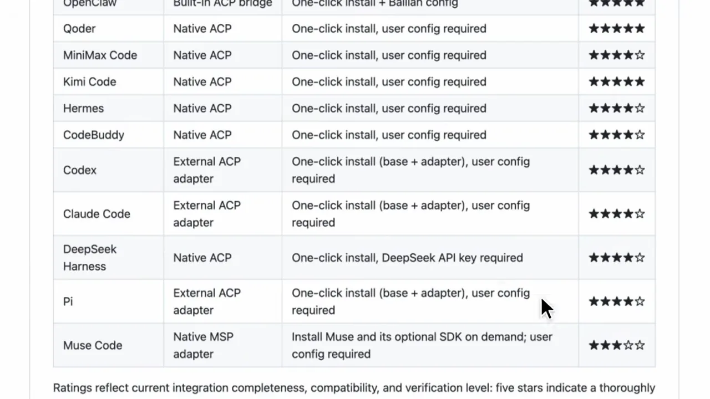
한 가지 기대를 미리 접어 둬야 해요. 이건 Qwen Audio Agent를 통해 새 에이전트 작업 흐름을 여는 거예요. 다른 터미널에 이미 열어 둔 Claude 대화를 자동으로 이어받지는 않아요.
설치와 설정
영상은 명령줄 설치와 브라우저 화면으로 진행해요. 데스크톱 설치 파일도 있고 자체 런타임을 포함하지만 여기서는 다루지 않아요. 순서를 정리하면 이래요.
- Node와 npm 버전을 확인해요 — 영상은 Node 24 계열(24.15 이상)과 npm 10 이상을 써요.
node --version,npm --version으로 확인해요. - 패키지를 설치해요 —
npm install -g qwen-audio-agent@2.0.1'added 195 packages'처럼 설치가 끝나요 qwenaudio config로 설정 파일 위치를 확인해요 — 실행 파일 이름은 한 단어qwenaudio예요.~/.config/qwaudio/config.env경로가 출력돼요- 음성 쪽 키와 모델을 넣어요 — DashScope 키, 제공자, 실시간 모델 세 줄이에요.
qwenaudio install claude로 Claude Code와 어댑터를 설치해요claude를 직접 실행해 로그인하고 작은 요청을 시험해요qwenaudio setup --backend claude로 연동을 점검해요- 설정 파일에서 백엔드와 작업 폴더를 정해요
- 게이트웨이와 WebUI를 띄워요
아래 터미널 화면에서 위쪽 두 줄이 버전 확인이고, 그다음이 설치, 강조된 줄이 qwenaudio config가 알려 준 설정 파일 경로예요.
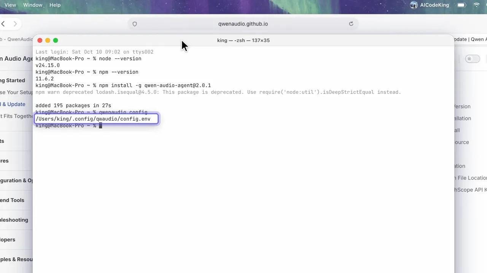
config.env 파일 하나에서 해요. 영상 02:38에서 보기음성 쪽: DashScope 키와 실시간 모델
음성 연결에는 DashScope를 써요. 제공자 콘솔에서 API(Application Programming Interface) 키를 만들어 DASHSCOPE_API_KEY에 넣고, 실시간 제공자를 dashscope로, 모델을 qwen-audio-3.0-realtime-plus로 정해요. 아래 설정 파일 맨 위에 키 줄이 가려져 있고, 그 아래 QWEN_AUDIO_REALTIME_PROVIDER=dashscope가 보여요. 나머지 주석 줄은 StepAudio, Doubao, MiniCPM 같은 다른 음성 제공자로 바꿀 때 쓰는 예시예요.
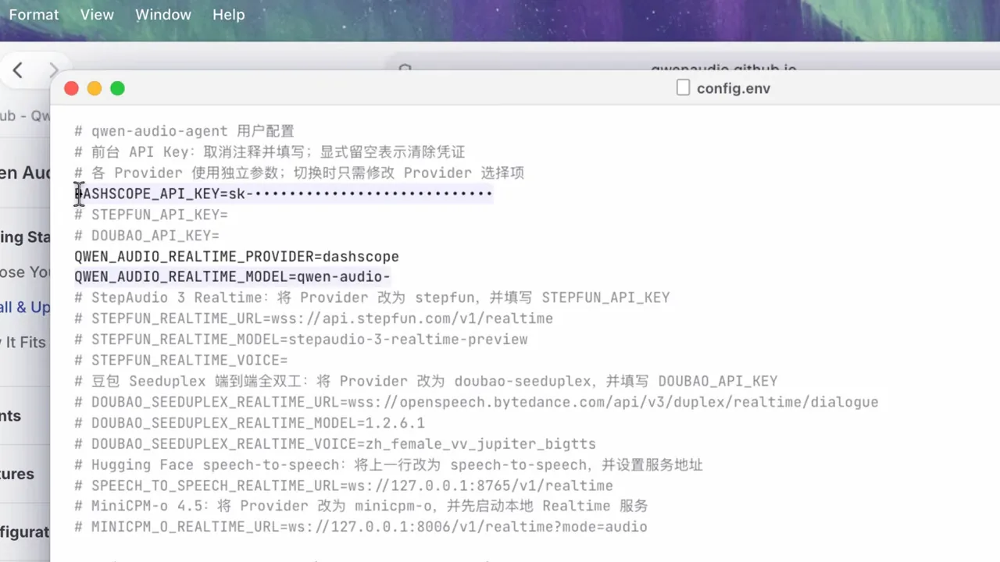
소프트웨어는 오픈소스지만 클라우드 음성 연결은 API 계정을 써요. Claude 사용량도 따로예요.
코딩 쪽: Claude Code를 백엔드로
qwenaudio install claude는 Claude Code 부품을 확인하고 빠진 걸 설치해요. 아래 화면의 1단계가 Claude Code 본체, 2단계가 ACP 어댑터 설치예요. 그 아래 qwenaudio setup --backend claude 결과에 'ACP Adapter 已安装 · 复用用户级配置', 즉 어댑터가 설치됐고 사용자 설정을 재사용한다는 줄이 보여요. 맨 아래에선 voice-code-demo 폴더를 만들고 pwd로 절대 경로를 확인해요.
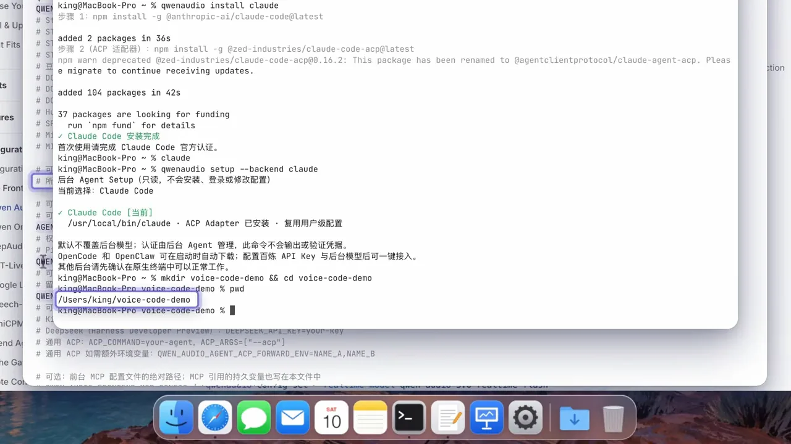
화자는 setup 명령이 연동 부품만 확인할 뿐 계정에 사용량이 남았는지는 증명하지 않는다고 짚어요. 그래서 그 전에 터미널에서 claude를 직접 띄워 로그인하고 작은 요청이 되는지 확인해요. 음성 화면을 거쳐서 문제를 찾는 것보다 훨씬 쉬워요.
이제 설정 파일로 돌아가요. 아래 화면에서 AGENT_PROTOCOL=claude 줄이 백엔드 선택이고, 강조된 QWEN_AUDIO_AGENT_BACKEND_MODEL=은 비워 둔 상태예요. 비워 두면 Claude의 기존 모델 설정을 그대로 써요.
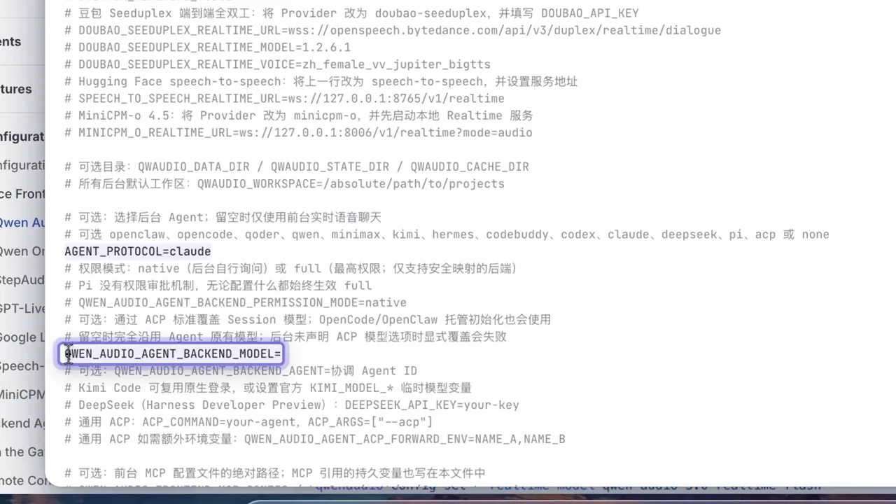
영상이 바꾼 설정을 모으면 이래요.
| 설정 키 | 영상에서 넣은 값 | 뜻 |
|---|---|---|
DASHSCOPE_API_KEY | (가림) | 음성 쪽 API 키 |
QWEN_AUDIO_REALTIME_PROVIDER | dashscope | 음성 제공자 |
QWEN_AUDIO_REALTIME_MODEL | qwen-audio-3.0-realtime-plus | 음성 모델 |
AGENT_PROTOCOL | claude | 코딩 백엔드 |
QWEN_AUDIO_AGENT_BACKEND_MODEL | (비움) | Claude의 기존 모델 설정 사용 |
QWEN_AUDIO_AGENT_BACKEND_PERMISSION_MODE | native | 백엔드 원래 방식대로 허락을 물어요 |
QWAUDIO_WORKSPACE | /Users/king/voice-code-demo | 에이전트의 작업 폴더 |
작업 폴더는 설정값이 정해요
화자가 특히 주의하라고 한 부분이에요. 터미널을 어떤 폴더에서 열었다고 그 폴더가 에이전트의 작업 폴더가 되지는 않아요. 앱에는 자체 기본 작업 폴더가 있고, Claude 전용 작업 폴더 설정이 일반 설정을 덮어쓸 수도 있어요. 아래 문서 화면의 표 마지막 줄 QWAUDIO_WORKSPACE가 '모든 백엔드의 기본 작업 폴더'이고, 강조된 문장이 백엔드 전용 설정(QODER_WORKSPACE 같은)이 우선한다는 내용이에요.
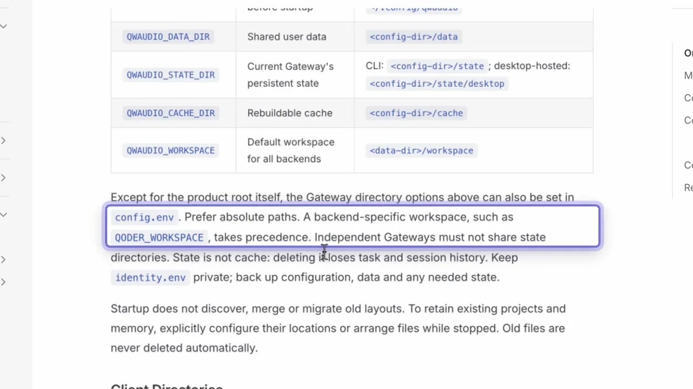
게이트웨이와 WebUI 띄우기
터미널 하나에서 qwenaudio로 게이트웨이를 띄우고 그 창은 열어 둬요. 다른 터미널에서 qwenaudio webui를 실행하면 브라우저 화면이 열려요. 기본 주소는 127.0.0.1:3101이에요. 아래 화면 위쪽에 Claude Code, Qwen Audio 3.0 Plus, Listening 세 표시가 보이면 백엔드와 음성 연결이 모두 붙은 거예요.
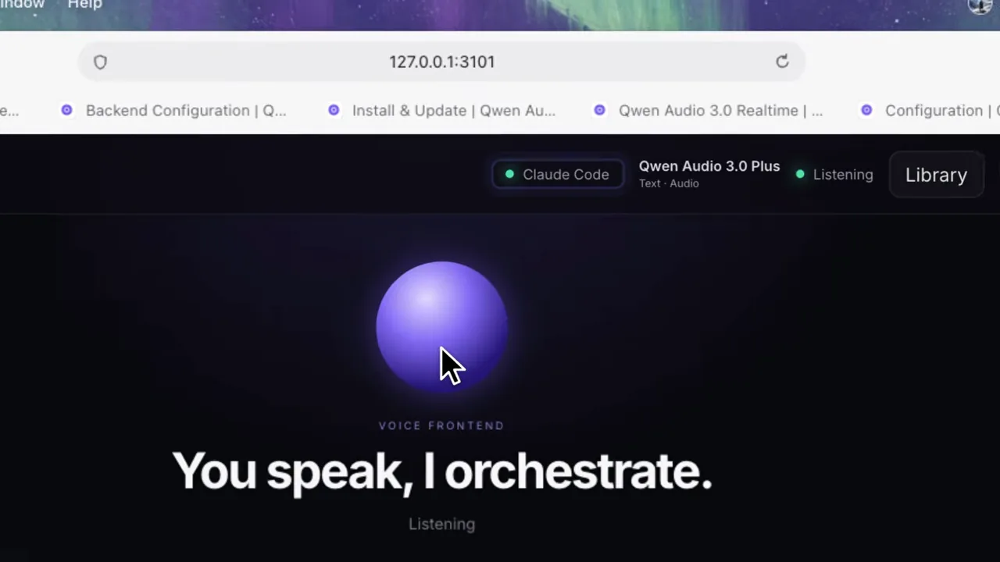
연결 확인하고 첫 작업 맡기기
첫 시험은 헤드폰을 쓰는 게 좋아요. 그래야 마이크가 어시스턴트 목소리를 다시 주워 담지 않아요. 화자는 "영어로, 짧게, 내 말이 들리는지 말해 줘"라고 말해 봐요. 이때 답만 듣지 말고 화면에 받아 적힌 문장도 확인해요. 받아쓰기가 틀리면 나중에 코딩 에이전트도 틀린 요청을 받거든요. 글자는 나오는데 소리가 안 들리면, 백엔드 설정을 건드리기 전에 출력 장치와 브라우저 오디오부터 봐요.
Claude 연결을 작은 일로 확인해요
다음 요청은 "설정된 프로젝트 폴더를 살펴보고, 절대 경로를 알려 주고, 파일 목록을 보여 줘. 아무것도 바꾸지 마"예요. 이건 실제 백엔드 작업을 만들어요. 아래 화면에서 초록색 Completed 카드가 그 작업이고, 그 아래 답이 경로 /Users/king/voice-code-demo와 .git 폴더만 있다는 사실을 알려 줘요.
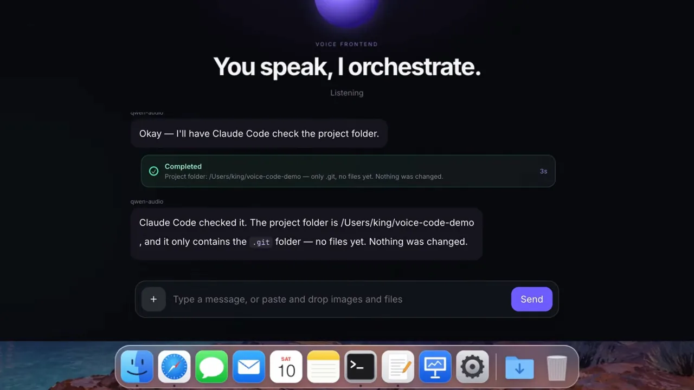
큰 일을 맡기기 전에 이 작은 확인을 먼저 맞추는 게 화자의 순서예요.
VoiceDesk 만들기를 말로 맡겨요
본 데모는 VoiceDesk라는 작은 이슈 트래커예요. 화자는 앱을 일부러 작게 잡아요. 앱이 크면 음성으로 한 수정이 프로젝트의 맞는 곳에 닿았는지 확인하기 어렵기 때문이에요. 첫 요청에 담긴 조건은 이래요.
- 설정된 작업 폴더 안에 반응형 이슈 트래커를 만들 것
- 순수 HTML(HyperText Markup Language), CSS(Cascading Style Sheets), JavaScript만 쓸 것
- 다크 테마, 이슈 목록, New Issue 버튼
- 이슈 추가, 완료 표시, 완료된 이슈 필터
- 로컬 스토리지에 저장하고, 기본 입력 검증을 넣을 것
- 로컬에서 실행하는 방법을 알려 주고, 모든 변경은 이 프로젝트 안에서만 할 것
보내고 나면 백엔드 작업 카드가 생기는지 봐요. 아래 화면에서 어시스턴트는 "VoiceDesk 빌드를 Claude Code에 보냈다"고 답하고, 그 아래 In progress 카드가 styles.css를 쓰는 중이라고 보여 줘요.
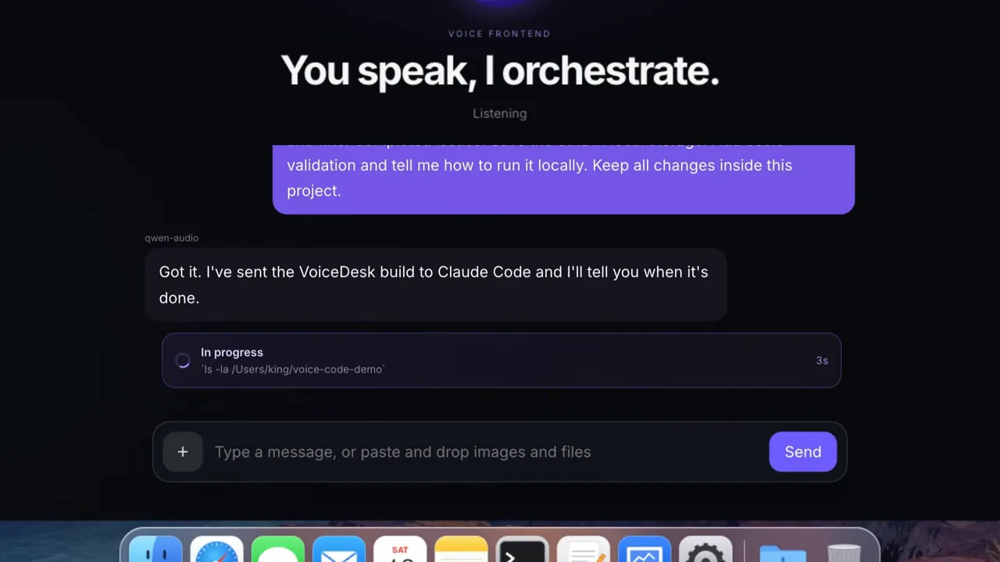
Claude가 권한을 물으면 열어서 어떤 작업인지 읽어요. 이 앱에서는 작업 하나를 허락하면 그 작업 안의 이후 작업까지 허락될 수 있어요. 그래서 화자는 버려도 되는 프로젝트에서 시연해 범위를 단순하게 유지해요.
코딩하는 동안 묻고, 끊고, 바꾸기
이 섹션이 영상이 가장 보고 싶어 한 장면이에요. Claude Code가 빌드하는 동안 음성으로 세 가지를 해 봐요. 따로 질문하기, 말 끊기, 요구사항 바꾸기예요.
작업 중에 따로 질문하기
빌드가 돌아가는 동안 "이 앱에서 로컬 스토리지가 무슨 일을 하는지, 새로고침하면 이슈가 지워지는지 설명해 줘. 코딩 작업은 계속 돌려"라고 물어요. 아래 화면에서 어시스턴트는 로컬 스토리지를 '브라우저 안의 작은 키-값 저장소'라고 설명하고, 이슈를 추가하거나 완료할 때마다 목록을 JSON(JavaScript Object Notation)으로 저장했다가 페이지를 열 때 다시 읽는다고 답해요.
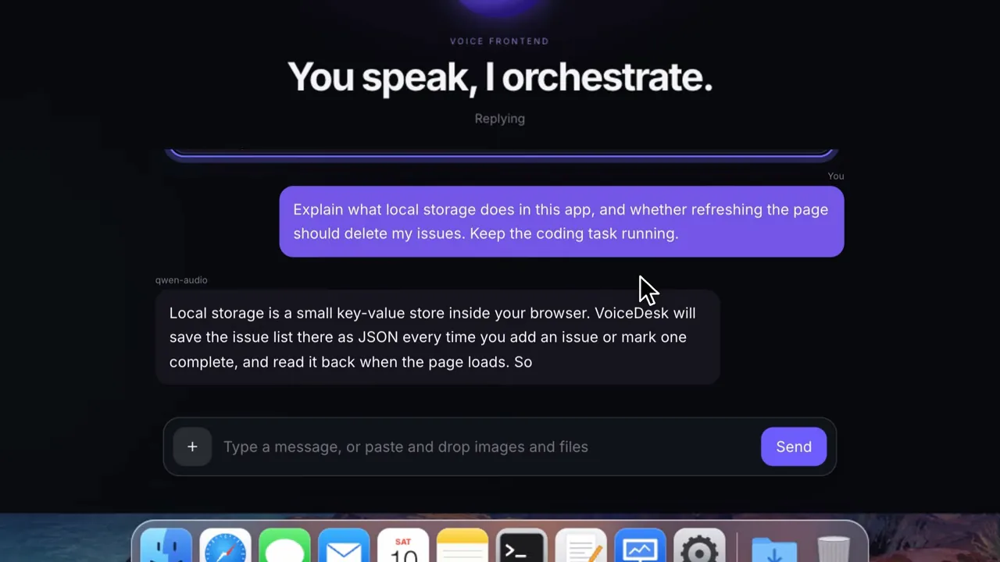
화자는 두 가지를 동시에 봐요. 설명이 질문에 맞는지, 그리고 백엔드 작업이 살아 있는지예요. 목소리가 "아직 작업 중이에요"라고 말하는 것만으로는 부족해요. 이게 Claude가 더 빨리 짠다는 뜻도 아니에요. 기다리는 시간에 기능을 이해하거나 요구사항을 정리할 수 있다는 뜻이에요.
말 끊기
설명이 나오는 도중에 "더 짧게, 한 문장으로 설명하고 VoiceDesk 빌드는 계속해"라고 끼어들어요. 아래 화면에서 긴 답 아래 작게 Interrupted 표시가 붙고, 끼어든 요청이 보라색 말풍선으로 들어가 있어요.
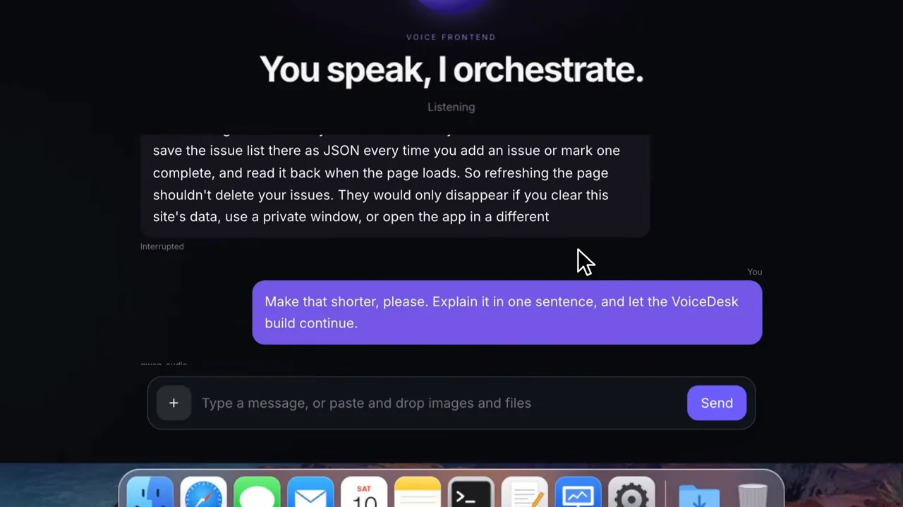
여기서 끊은 건 음성 답이에요. 이미 백엔드가 받은 작업은 자동으로 취소되지 않아요. 화자는 이 구분이 실제로 쓸모 있다고 말해요. 설명만 그만 듣고 싶을 뿐 일은 계속 시키고 싶을 때가 많거든요.
빌드 중에 요구사항 바꾸기
이번엔 "같은 VoiceDesk 프로젝트에서 최종 디자인을 라이트 테마로 바꾸고, New Issue 버튼 이름을 Create Issue로 바꿔. 다른 요구사항은 그대로. 이 지시가 대기 중인지 적용 중인지 알려 줘"라고 말해요. 아래 화면에서 어시스턴트는 "대기 중이에요. 첫 빌드가 아직 돌고 있어서 끝나면 후속 작업으로 반영할게요"라고 답하고, 그 아래 Queued 카드가 생겨요.
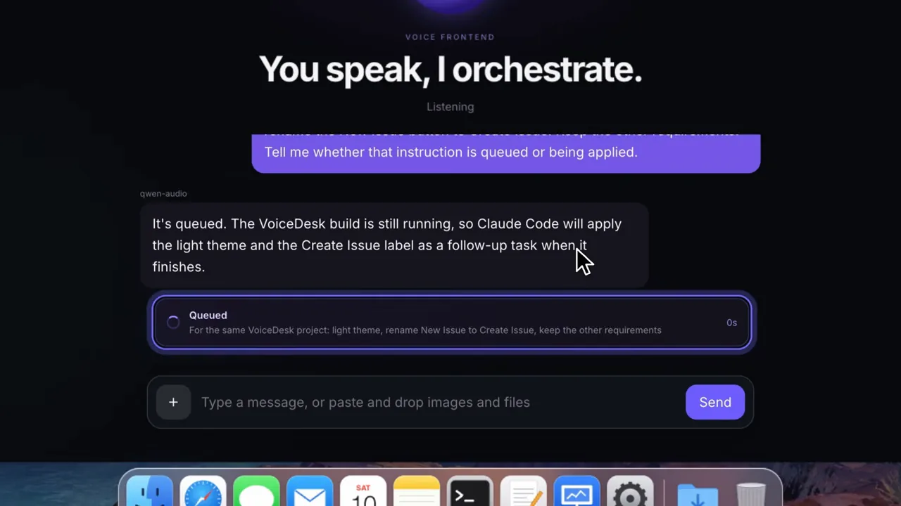
첫 빌드가 먼저 끝나도 괜찮아요. 후속 작업까지 끝나게 둔 다음 최종 앱을 봐요. 아래 화면에서 후속 작업 카드는 Completed로 바뀌었고, 카드 설명에 '라이트 테마로 바꾸고 버튼 이름을 Create Issue로 바꿨다'고 적혀 있어요. 어시스턴트는 "두 작업 모두 끝났어요"라고 알려 줘요.
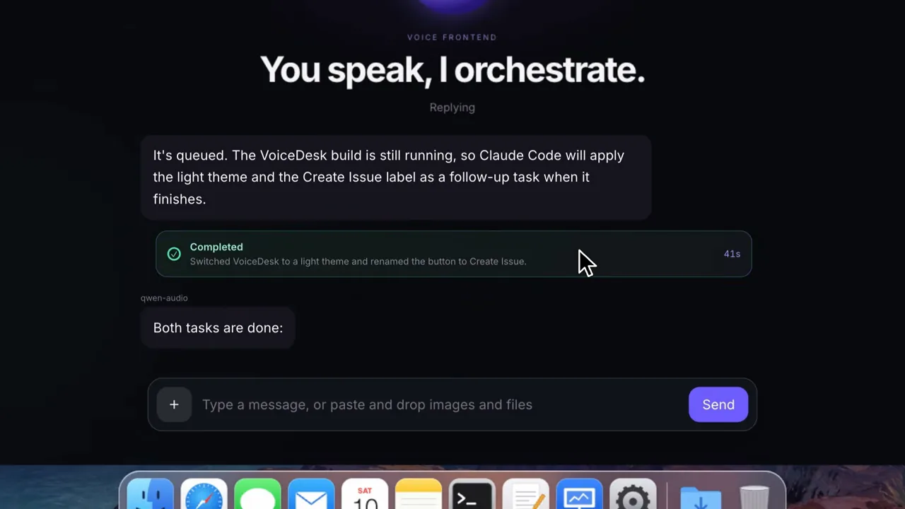
세 동작이 무엇을 바꾸고 무엇을 그대로 두는지 정리하면 이래요.
| 음성으로 한 일 | 음성 답 | 백엔드 코딩 작업 |
|---|---|---|
| 작업 중에 따로 질문 | 새 질문에 답해요 | 계속 진행돼요 |
| 말 끊기 | 멈추고 새 요청에 답해요 | 계속 진행돼요 |
| 요구사항 변경 | 대기인지 적용인지 알려 줘요 | 후속 작업으로 대기했다가 반영돼요 |
결과 확인과 버그 고치기
작업이 끝나면 실행 방법을 글로 달라고 해요. 긴 명령을 소리로 듣고 받아 적기보다 복사할 수 있는 글이 나아요. 아래 화면에서 어시스턴트는 터미널 명령 두 줄(cd /Users/king/voice-code-demo, python3 -m http.server 8000)과 열 주소 http://localhost:8000을 글로 줘요. 그 아래 보라색 말풍선은 뒤에 나올 디버깅 요청이에요.
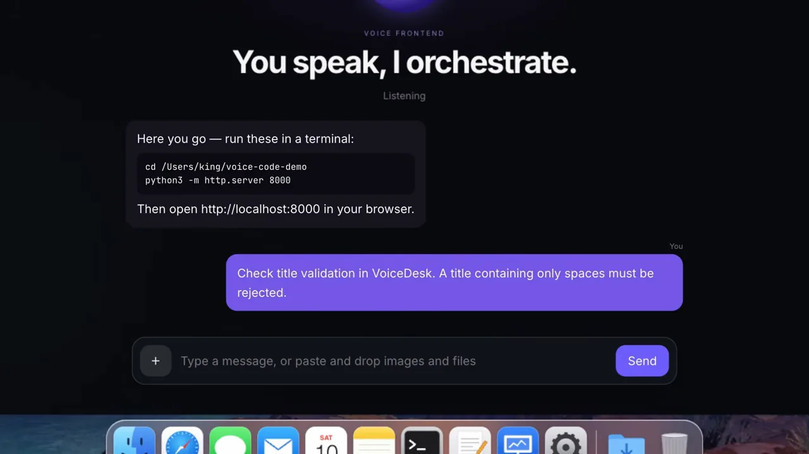
요청한 대로 됐는지 직접 눌러 봐요
확인할 건 라이트 테마, Create Issue 버튼, 그리고 원래 이슈 기능이에요. 화자는 '모바일 메뉴 고치기'와 '도움말 페이지 고치기' 두 이슈를 추가하고, 첫째를 완료로 표시하고, 완료 숨기기 필터를 켰다 꺼요. 새로고침해서 이슈가 남아 있는지도 봐요. 아래 화면에서 첫째 이슈는 체크되고 줄이 그어졌고, 오른쪽 위 버튼은 Create Issue로 바뀌어 있어요.
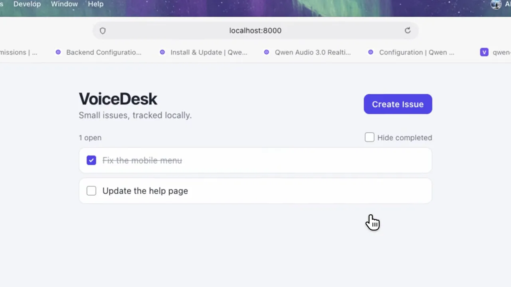
어시스턴트가 요구사항을 정확히 따라 말해도 앱은 다르게 동작할 수 있어요. 빠진 게 있으면 같은 프로젝트를 짚어 좁게 고쳐 달라고 해요. 영상의 예시는 "버튼이 아직 New Issue라고 돼 있어. 보이는 이름만 Create Issue로 바꾸고 동작은 그대로 둬"예요. 화자는 문제를 보면서 말로 설명하되, 무엇을 바꿀지는 구체적으로 말하는 이 방식이 좋다고 해요.
공백만 있는 제목 버그
디버깅 시험으로 Create Issue를 누르고 제목에 공백만 넣어 제출해 봐요. 앱이 거부하면 검증이 통과한 거고, 빈 이슈가 생기면 보고할 버그가 생긴 거예요. 아래 화면 맨 아래 강조된 빈 줄이 공백 제목으로 만들어진 이슈예요.
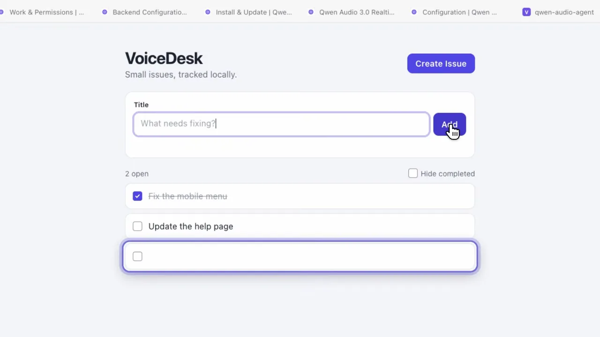
화자의 요청은 이래요. "VoiceDesk의 제목 검증을 확인해. 공백만 있는 제목은 거부돼야 해. 지금 코드가 어떻게 처리하는지 설명하고, 회귀 테스트를 추가하고, 실패하면 구현을 고쳐. 정상 제목과 이미 저장된 이슈는 유지해." 확인할 수 있는 조건을 주니까, 뭔가 이상해 보인다고 폼 전체를 다시 짜는 일도 막을 수 있어요.
Claude가 조사하는 동안 음성 쪽에는 "원래 글자의 길이만 재면 왜 공백 제목이 통과할까?"라고 물어요. 답은 공백도 글자라서 공백 네 개는 길이가 4이고, 앞뒤 공백을 잘라 내는 trim을 먼저 해야 길이가 0이 된다는 거예요. 화자는 두 답의 역할이 다르다고 짚어요. 음성 쪽 설명은 일반론이고, 이 앱이 실제로 어떻게 하는지는 코드와 테스트 결과가 말해 줘요.
작업이 끝나면 바뀐 코드와 테스트 결과를 봐요. 아래 화면 위쪽 diff를 보면 validateTitle 안의 한 줄에 .trim()이 붙었어요. 그 아래 npm test에서 빈 제목 거부, 공백 제목 거부, 정상 제목 허용 세 테스트가 모두 통과하고, git status는 깨끗해요.
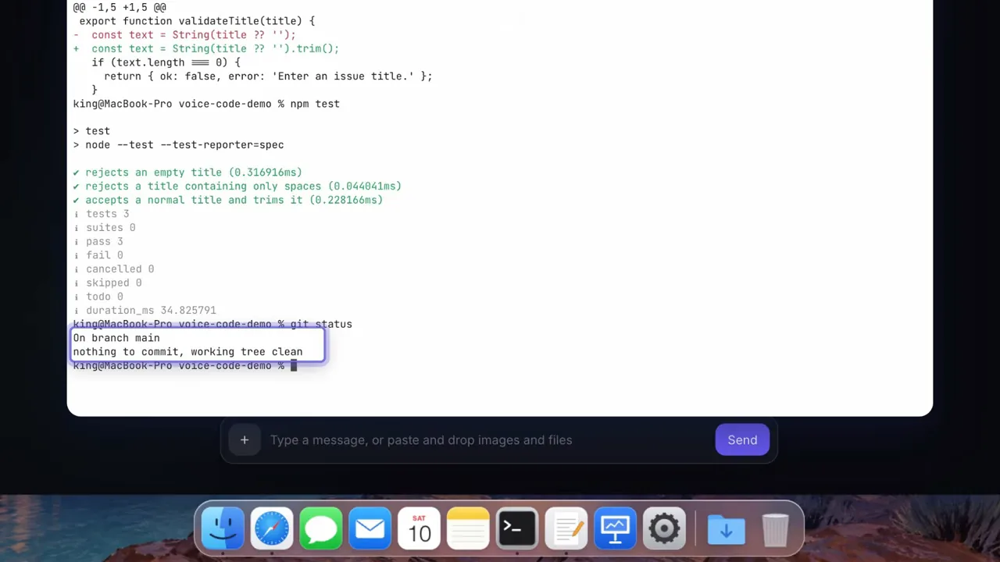
마지막으로 폼을 직접 다시 시험해요. 빈 제목, 공백 제목, 정상 제목을 차례로 넣고, 새로고침해서 앞서 만든 이슈도 확인해요. 아래 화면에서 공백 제목은 이제 빨간 테두리와 'Enter an issue title.' 메시지로 거부돼요. 수정 전에 생긴 빈 이슈는 목록에 그대로 남아 있어요.
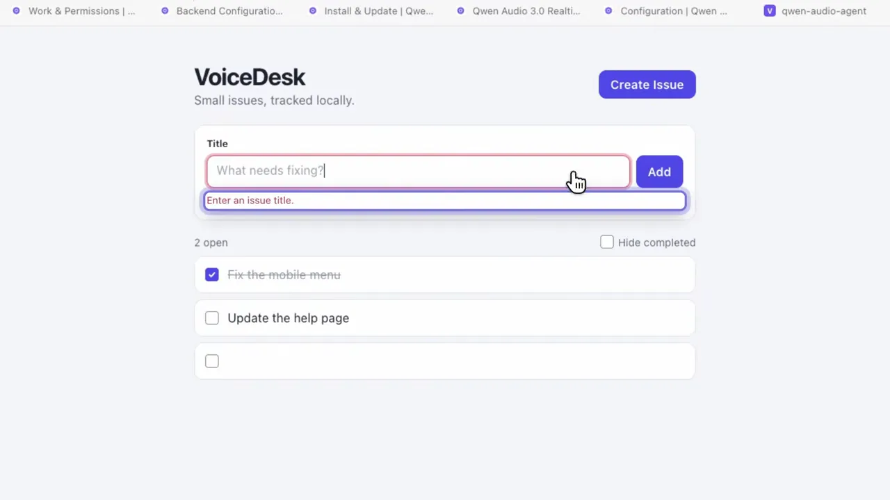
화자는 이 부분에선 오류 메시지를 글로 남겨 두라고 해요. 음성은 문제를 설명할 때 좋지만, 정확한 오류는 붙여 넣거나 관련 파일을 첨부하는 게 한 글자씩 읽어 주는 것보다 쉬워요.
작업은 어떻게 멈출까요?
쓸 만한 코딩 도구로 보기 전에 화자가 확인하고 싶은 게 하나 더 있어요. 백엔드 작업을 멈추고 싶을 때 어떻게 되느냐예요. 이 시험은 일부러 파일을 바꾸지 않는 작업으로 해요. "VoiceDesk 프로젝트를 검토해서 자세한 접근성 보고서를 만들어. 파일 수정이나 설치는 하지 마"라고 시키고, 작업이 돌기 시작하면 "접근성 검토를 취소해"라고 말해요. 작업이 여러 개 돌고 있다면 어떤 카드인지 짚어서 말해요.
아래 첫 화면에서 작업 카드가 Cancelling으로 바뀌고 '백엔드가 취소를 확인하길 기다리는 중'이라고 적혀 있어요. 둘째 화면에서 어시스턴트가 "취소됐어요. 보고서를 쓰기 전에 멈췄어요"라고 알려 줘요.
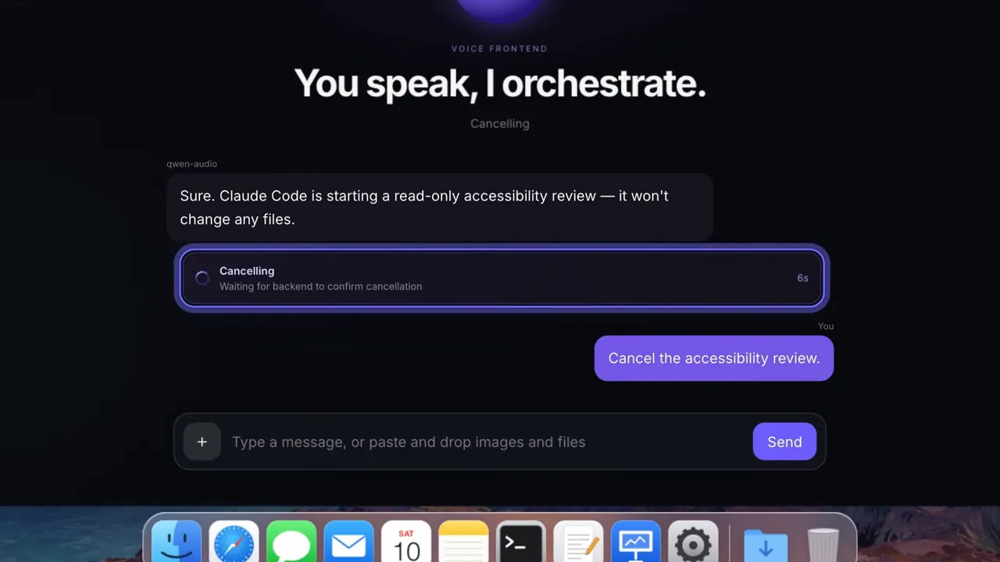
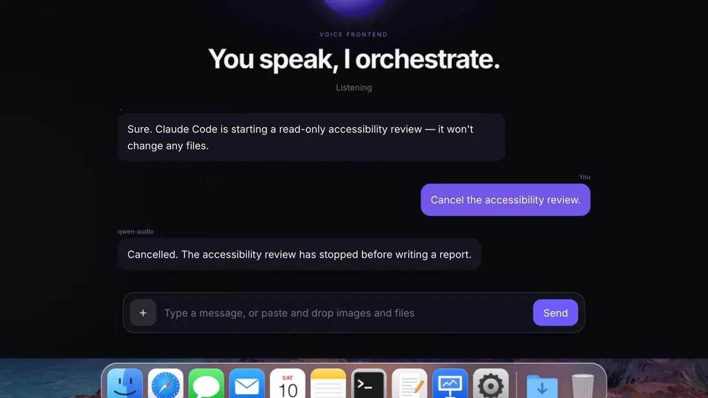
작업이 취소보다 먼저 끝나 버렸다면, 그건 취소가 작동한다는 증거가 못 돼요. 그리고 취소해도 이미 한 수정은 되돌아가지 않아요. 그래서 이 예시를 읽기 전용으로 골랐고, 파일을 고치던 작업을 멈췄다면 그 뒤에 diff를 꼭 확인해야 해요.
영상에 나온 '멈추는' 동작은 세 가지예요. 이름은 비슷해도 멈추는 대상이 달라요.
쓸 만한 곳, 비용, 문제 해결
어디에 쓰면 좋을까요
화자는 긴 코딩 작업을 에이전트에 맡겨 두고 짧은 대화를 계속 열어 두는 방식이 마음에 든다고 해요. 음성에 잘 맞는 일과 글이 나은 일을 나누면 이래요.
| 음성이 맞는 일 | 글이나 화면이 나은 일 |
|---|---|
| 요구사항을 말로 풀어 설명하기 | 정확한 파일 경로 |
| 설계 선택이 왜 중요한지 묻기 | 코드 |
| 눈에 보이는 문제를 보면서 보고하기 | 오류 메시지 |
| 작업이 도는 동안 기능에 대해 묻기 | 결과 검토(앱과 diff를 앞에 두고) |
음성 화면을 붙인다고 검토 단계가 사라지지는 않아요.
비용은 두 군데서 나가요
DashScope 음성 프런트엔드가 대화를 처리하고, Claude Code는 설정된 계정이나 API로 코딩을 해요. 후속 작업이 늘면 백엔드 사용량도 늘어요. 프로젝트가 오픈소스라고 클라우드 모델 호출이 공짜가 되지는 않아요. 화자의 조언은 이래요.
- 쓰는 음성 모델과 지역의 현재 가격을 확인해요
- Claude 계정 쪽 사용량도 확인해요
- 비용을 비교하려면 같은 세션의 양쪽 사용량을 함께 기록해요
- 긴 설명이 필요 없으면 음성 답을 짧게 하고, 자세한 결과는 글로 받고 요약만 말로 들어요
로컬 음성 프런트엔드도 있어요. 아래 문서 화면은 Hugging Face speech-to-speech 같은 로컬 서비스를 쓰는 설정이고, 강조된 문장은 '완전 로컬 모드에서는 클라우드 API 키가 필요 없다'는 내용이에요.
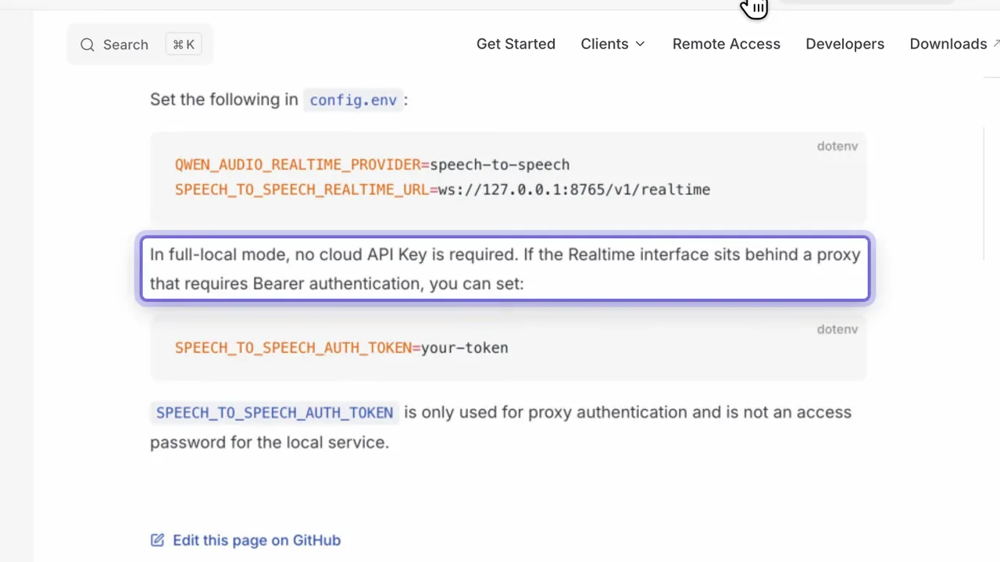
이 영상에서는 음성 프런트엔드와 코딩 모델 모두 호스팅 서비스를 썼어요.
문제가 생기면 실패한 쪽부터 봐요
증상으로 어디를 볼지 정해요.
| 증상 | 먼저 볼 곳 |
|---|---|
| 받아 적힌 글자가 안 나와요 | 마이크 입력, 음성 연결 |
| 글자는 나오는데 소리가 안 들려요 | 출력 장치, 브라우저 오디오 |
| 대화는 되는데 코딩 작업이 실패해요 | 백엔드 설치, 인증, 모델 접근, 사용량 |
| 설정을 바꿨는데 그대로예요 | 게이트웨이를 멈췄다가 다시 실행했는지 |
아래 문제 해결 문서의 강조된 첫 줄도 같은 순서를 말해요. 백엔드 실행이 실패하면 qwenaudio setup --backend <name>으로 설치를 확인하고, 인증과 모델은 백엔드 자체 화면에서 확인하라고 해요.
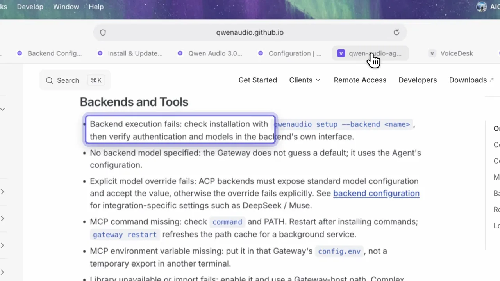
처음에는 프로젝트 하나, 작업 하나로 시작해요. 그게 안정적으로 되면 다른 클라이언트나 에이전트를 더 붙여 봐요. 어떤 수정이 어느 작업에 속하는지 알아야 이해하기 쉬워요.
평가 기준 네 가지
화자는 이 도구를 코딩의 대화 부분에 쓰겠다고 해요. 기능을 같이 생각하고, 작업이 도는 동안 묻고, 앱을 보면서 버그를 설명하는 일이에요. 정확한 세부와 검토는 키보드로 하고요. 일상 도구로 들일지 판단할 기준은 아래 화면의 네 질문이에요.
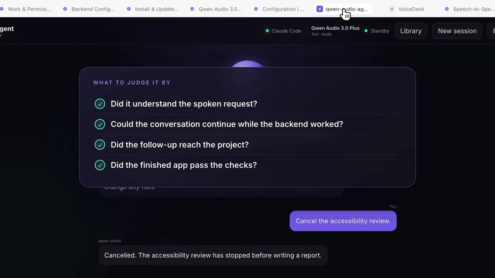
The voice needs to be comfortable, but the changes still need to be correct.
목소리는 편해야 하지만, 변경은 여전히 정확해야 해요.
— 영상 13:36